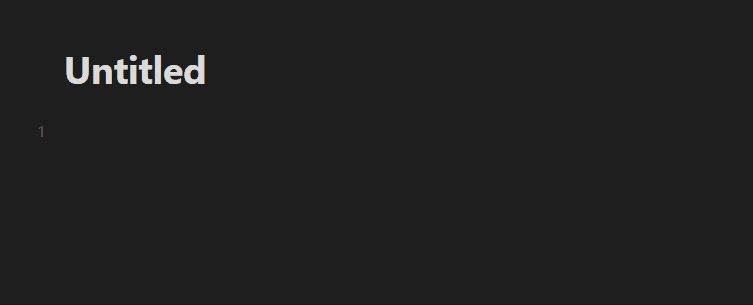

from os import PathLike
from fastcore.test import *
from nbdev.showdoc import show_docmarkdown.obsidian.links
Functions for parsing internal links in Obsidian.md style markdown.
Obsidian uses both Markdown style links and Wikilinks as internal links. Markdown style links are of the form [text_shown](link) whereas Wikilinks are of the form [[link_to_markdown#possible_anchor_to_header|text_shown]]. They have an exclamation mark ! if they are embedded.
Within Obsidian, it is often more convenient to use Wikilinks for Vault-internal links for several reasons:
- Obsidian automatically searches for links and aliases matching for auto-completion when constructing a Wikilink. 
- Wikilink allow for the empty space character
(whereas Markdown style links require empty space charactersto be replaced with%20)
Nevertheless, Markdown style links have the following functions which Wikilinks lack:
- Markdown style links can contain external links (whether the links point to other Obsidian vaults or to a URL)
- Markdown style links can render LaTeX text.
Finding links in text via indices
link_ranges_in_text
link_ranges_in_text (text:str)
*Return ranges in the markdown text string where internal links occur.
See Also
| Type | Details | |
|---|---|---|
| text | str | |
| Returns | list | Each tuple is of the form (a,b) where text[a:b] is an obsidian internal link. |
link_ranges_in_text returns a list of indices in a string in which the links are located.
tutorial_text = r'''
This is an Obsidian note. It has some [[this_is_the_note_to_which_the_link_points|links]]!
Links are pretty neat. They can [[this_text_is_not_actually_shown|connect notes]] for you.
The following will create a link to the note `some_note`; the displayed text is `some_note`: [[some_note]]
You can also embed the contents of one note into another note. ![[note_being_embedded]].
The contents of `note_being_embedded` will be displayed when you view the note in Obsidian's view mode.
You can make anchors in links. For example [[note#This is a header title]] is a link to the note named
`note` and more specifically to the theader with title `This is a header title`.
The above links are all Wikilinks. Obsidian also supports Markdownlinks, e.g. [This is the text shown](This is the link.)
How about a link to an anchor? [[note_name#heading]]
If the note of a link does not exist in an Obsidian vault, then Obsidian will create the note.
Even if the note does not have a header with title specified by the anchor of a link, Obsidian
will still open the note; it will not go to any particular header, however.
This is a Markdownstyle link: [hello](note_name.md).
This is an embedded markdownstyle link: 
'''
ranges = link_ranges_in_text(tutorial_text)
match_strs = [tutorial_text[start:end] for start, end in ranges]
test_eq(match_strs, [
'[[this_is_the_note_to_which_the_link_points|links]]',
'[[this_text_is_not_actually_shown|connect notes]]',
'[[some_note]]',
'![[note_being_embedded]]',
'[[note#This is a header title]]',
'[This is the text shown](This is the link.)',
'[[note_name#heading]]',
'[hello](note_name.md)',
''
])ObsidianLink class
LinkFormatError
LinkFormatError (text)
*Error that is raised when a string cannot be parsed as an ObsidianLink object.
Attribute
text-str*
LinkType
LinkType (value, names=None, module=None, qualname=None, type=None, start=1)
*An Enumeration indicating whether an ObsidianLink object is a Wikilink or a Markdown-style link.
Enumerates LinkType.WIKILINK and LinkType.MARKDOWN.*
ObsidianLink
ObsidianLink (is_embedded:bool, file_name:Union[str,int], anchor:Union[str,int], custom_text:Union[str,int], link_type:__main__.LinkType=<LinkType.WIKILINK: 0>)
*Object representing an obsidian link
Attributes
is_embedded-bool- Whether or not the link is embedded.
file_name-str, or-1The destination of the link. It is either
- The Obsidian-vault-recognized name of the file that the link points to. It can be a path relative to the Obsidian vault path without the file extension (.md),
- an external link, such as a URL, or
- -1, in which case the object represents a generic link pointing to any file (this is for generating regex).
Note that if
file_nameis the empty string, then the link is a link to the same file
anchor-str,0, or-1- The title of the header of the anchor in the destination that the link points to or the ID to the markdown block link (preceded by a carat
^). If 0, then theObsidianLinkobject represents a link without an anchor. If -1, then the object represents a generic link with or without an anchor (this is for generating regex).
- The title of the header of the anchor in the destination that the link points to or the ID to the markdown block link (preceded by a carat
custom_text-str,0, or-1- The custom text of the link. Is
Noneif no such text is specified. If 0, then theObsidianLinkobject represents an internal link without custom text. If -1, then the object represents a generic internal link of any custom text (this is for generating regex).
- The custom text of the link. Is
link_type-LinkType- If
LinkType.WIKILINK, then the str should be of the format'[[<Obsidian-vault-recognized-name>(#anchor)?(|custom_text)]]'(The question marks here indicate optional components). Otherwise, the str should be a more standard Markdown link. Defaults toLinkType.WIKILINK.
- If
Parameters
- is_embedded - bool
- file_name - str or
None- If
None, setself.file_nameto-1.
- If
- anchor - str or
None - custom_text - str or
None - link_type -
LinkType*
ObsidianLink.from_text
ObsidianLink.from_text (text:str)
*Return an ObsidianLink object from text.
Raises
- InteralLinkFormatError
- If
textis not properly formatted as an Obsidian internal link.*
- If
ObsidianLink.to_regex
ObsidianLink.to_regex ()
*Return the regex for that this ObsidianLink object represents.
Assumes that self.file_name, self.anchor, and self.custom_text are regex-formatted strings, e.g. if self.custom_text is denotes?, then the outputted regex-pattern matches links whose custom text is either denote or denotes.
If neither self.file_name, self.anchor nor self.custom_text is -1, then the regex will in fact be a concrete string.*
ObsidianLink.__str__
ObsidianLink.__str__ ()
Return str(self).
ObsidianLink.to_string
ObsidianLink.to_string ()
*Return the string for the link if it is concrete.
Raises
- ValueError
- If
self.file_name,self.anchororself.custom_textis -1, i.e. ambiguously represents an anchor or custom text.*
- If
ObsidianLink.convert_link_type
ObsidianLink.convert_link_type (link_type:__main__.LinkType)
Return an equivalent Link object which has the specified LinkType.
ObsidianLink.displayed_text
ObsidianLink.displayed_text ()
*Returns the displayed text of this link.
self.file_name, self.custom_text and self.anchor are assumed to be not -1.*
ObsidianLink.is_abstract
ObsidianLink.is_abstract ()
Return True if self is abstract, i.e. file_name, anchor, or custom_text is -1.
Parsing an ObsidianLink class from a string
The following example parses a Wikilink with an anchor and a custom display text:
internal_link = ObsidianLink.from_text("[[smooth_covering_map#Smooth covering map 1|smooth covering map]]")
assert internal_link.file_name == "smooth_covering_map"
assert internal_link.anchor == "Smooth covering map 1"
assert internal_link.custom_text == "smooth covering map"The following example parses a Wikilink with an anchor, but not with a custom display text:
internal_link = ObsidianLink.from_text("[[sample_thing#anchor]]")
assert internal_link.file_name == "sample_thing"
assert internal_link.anchor == "anchor"
assert internal_link.custom_text == 0The following example parses a Wikilink without an anchor, but with custom display text:
internal_link = ObsidianLink.from_text("[[another_file|this_is_the_text_shown]]")
assert internal_link.file_name == "another_file"
assert internal_link.anchor == 0
assert internal_link.custom_text == "this_is_the_text_shown"The following example parses a Wikilink without neither an anchor nor custom display text:
internal_link = ObsidianLink.from_text("[[notation_I_S_ideal_of_vanishing_on_a_subset_of_the_spectrum_of_a_ring]]")
assert internal_link.file_name == "notation_I_S_ideal_of_vanishing_on_a_subset_of_the_spectrum_of_a_ring"
assert internal_link.anchor == 0
assert internal_link.custom_text == 0The following example parses an embedded (Wiki)link
internal_link = ObsidianLink.from_text("![[_reference_some_reference]]")
assert internal_link.file_name == "_reference_some_reference"
assert internal_link.anchor == 0
assert internal_link.custom_text == 0The following example parses a Markdownlink with an anchor:
internal_link = ObsidianLink.from_text("[asdf](localization_of_a_module#Localization of a module 1)")
assert internal_link.file_name == "localization_of_a_module"
assert internal_link.anchor == "Localization of a module 1"
assert internal_link.custom_text == "asdf"The following example parses a Markdownlink with some spaces formatted as %20:
internal_link = ObsidianLink.from_text(r"[do do](Some%20note#Topic%201)")
assert internal_link.file_name == "Some note"
assert internal_link.anchor == "Topic 1"
assert internal_link.custom_text == "do do"The following example parses a Markdownlink in which the displaytext has LaTeX in it:
internal_link = ObsidianLink.from_text("[$\\mathscr{O}(n)$](some_reference_notation_O_n_on_projective_scheme)")
assert internal_link.file_name == "some_reference_notation_O_n_on_projective_scheme"
assert internal_link.anchor == 0
assert internal_link.custom_text == "$\\mathscr{O}(n)$"
# TODO test links with file_name = -1ObsidianLink.__copy__
ObsidianLink.__copy__ ()
link = ObsidianLink(
is_embedded=False,
file_name="test_file",
anchor="test_anchor",
custom_text="test_custom",
link_type=LinkType.WIKILINK
)
link_copy = link.__copy__()
test_eq(link_copy, link)
test_eq(link_copy.is_embedded, link.is_embedded)
test_eq(link_copy.file_name, link.file_name)
test_eq(link_copy.anchor, link.anchor)
test_eq(link_copy.custom_text, link.custom_text)
test_eq(link_copy.link_type, link.link_type)ObsidianLink.__eq__
ObsidianLink.__eq__ (other)
Return self==value.
link1 = ObsidianLink(
is_embedded=False,
file_name="test_file",
anchor="test_anchor",
custom_text="test_custom",
link_type=LinkType.WIKILINK
)
link2 = ObsidianLink(
is_embedded=True,
file_name="another_file",
anchor=0,
custom_text=0,
link_type=LinkType.MARKDOWN
)
link1_copy = link1.__copy__()
test_eq(link1, link1_copy)
test_ne(link1, link2)
test_ne(link1, "Not an ObsidianLink")link1 = ObsidianLink(
is_embedded=False,
file_name="test_file",
anchor="test_anchor",
custom_text="test_custom",
link_type=LinkType.WIKILINK
)
link1_different_embedded = ObsidianLink(
is_embedded=not link1.is_embedded,
file_name=link1.file_name,
anchor=link1.anchor,
custom_text=link1.custom_text,
link_type=link1.link_type
)
test_ne(link1, link1_different_embedded)
link1_different_file_name = ObsidianLink(
is_embedded=link1.is_embedded,
file_name="different_file",
anchor=link1.anchor,
custom_text=link1.custom_text,
link_type=link1.link_type
)
test_ne(link1, link1_different_file_name)Constructing abstract ObsidianLink objets
We might want to detect links in Obsidian Markdown notes of certain formats. Constructing ObsidianLink objects via the constructor can help with this.
Setting file_name, anchor, or custom_text to -1 can yields an ObisidianLink object representing an abstract link. Use the to_regex function of the ObsidianLink object to get a regex str which detects links of the specified format.
In the following example, the anchor and custom text of the ObsidianLink object are both abstract - the regex pattern returned by ._to_regex will detect any link of the specified type (by default, LinkType.WIKILINK) with the specified file name:
internal_link_object = ObsidianLink(is_embedded=False, file_name = 'hi', anchor=-1, custom_text=-1)
regex_pattern = internal_link_object.to_regex()
print(f'regex_pattern: {regex_pattern}')
assert re.match(regex_pattern, '[[hi#this is some anchor|this is some display text]]')
assert re.match(regex_pattern, '[[hi|some display text, but no anchor!]]')
assert re.match(regex_pattern, '[[hi#some anchor, but no custom text]]')
assert re.match(regex_pattern, '[[hi]]') #No anchor and no custom text
assert not re.match(regex_pattern, '[[note_with_wrong_name]]')regex_pattern: \[\[hi(#(.*?))?(\|(.*?))?\]\]The following is an example where the custom_text is specified, but the file_name and anchor are both abstract:
internal_link_object = ObsidianLink(is_embedded=False, file_name = -1, anchor=-1, custom_text='must match this text!')
regex_pattern = internal_link_object.to_regex()
print(f'regex_pattern: {regex_pattern}')
assert re.match(regex_pattern, '[[some note#some anchor|must match this text!]]')
# TODO: matching the below is not currently implemented.
# assert re.match(regex_pattern, '[[must match this text!]]')
assert re.match(regex_pattern, '[[some note|must match this text!]]')
assert re.match(regex_pattern, '[[#anchor in note|must match this text!]]') #No anchor and no custom text
assert not re.match(regex_pattern, '[[some note#some anchor|Wrong text]]')regex_pattern: \[\[([^#\|]*)?(#(.*?))?\|must match this text!\]\]In the following example, the linktype is specified to be LinkeType.MARKDOWN:
internal_link_object = ObsidianLink(is_embedded=False, file_name = 'hi', anchor=-1, custom_text=-1, link_type=LinkType.MARKDOWN)
regex_pattern = internal_link_object.to_regex()
print(f'regex_pattern: {regex_pattern}')
assert re.match(regex_pattern, '[Some custom text](hi#Some anchor)')
assert re.match(regex_pattern, '[Some custom text, no anchor](hi)')
assert not re.match(regex_pattern, '[Some custom text, link an anchor in the same note](#anchor)')regex_pattern: \[(.*?)?\]\(hi(#(.*?))?\)String of an ObsidianLink object
A concrete ObsidianLink object has a to_string function:
internal_link_object = ObsidianLink(is_embedded=True, file_name = 'compactly_generated_product_hom_adjunction', anchor='Title', custom_text='compactly generated', link_type=LinkType.WIKILINK)
print(internal_link_object.to_string())
internal_link_object = ObsidianLink(is_embedded=True, file_name = 'compactly_generated_product_hom_adjunction', anchor='Title 1', custom_text='compactly generated', link_type=LinkType.MARKDOWN)
print(internal_link_object.to_string())![[compactly_generated_product_hom_adjunction#Title|compactly generated]]
Find the links in text as ObsidianLink objects
links_from_text
links_from_text (text:str)
Return a list of ObsidianLink objects corresponding to links found in the text.
| Type | Details | |
|---|---|---|
| text | str | |
| Returns | list | The ObsidianLink objects are ordered by appearance. |
Unlike link_ranges_in_text, the links_from_text function returns a list of ObsidianLink objects instead.
links = links_from_text(tutorial_text)
assert links[0].displayed_text() == 'links' # The displayed text of [[this_is_the_note_to_which_the_link_points|links]] is `links`.
assert links[3].is_embedded # ![[note_being_embedded]] is an embedded link
assert links[4].anchor == 'This is a header title' # [[note#This is a header title]] has anchor `This is a header title`.Removing links from text
remove_links_from_text
remove_links_from_text (text:str, exclude:list[__main__.ObsidianLink]=None, remove_embedded_note_links:bool=False)
Return a text with all Obsidian links removed and replaced with the display texts of the links.
| Type | Default | Details | |
|---|---|---|---|
| text | str | ||
| exclude | list | None | A list of ObsidianLink objects of links to not be removed. |
| remove_embedded_note_links | bool | False | If True, remove links to embedded notes as well. Note that embedded links are replaced by their “display” text in the same manner as non-embedded links and are not replaced the content of the embedding. If False, does not modify embedded note links. |
| Returns | str |
We can remove all links of from text and preserve the underlying display text of each link:
text = 'I have a [[this is a note#this is an anchor in the note|link]]'
links_removed = remove_links_from_text(text)
print(links_removed)
assert links_removed == 'I have a link'
text = 'Something about a [[some_reference_conormal_sheaf_of_a_locally_closed_embedding#For a locally closed embedding 2 4|conormal sheaf]]'
links_removed = remove_links_from_text(text)
print(links_removed)
assert links_removed == 'Something about a conormal sheaf'
text = 'This is a link without a specified display text: [[some_kind_of_note]].'
links_removed = remove_links_from_text(text)
print(links_removed)
assert links_removed == 'This is a link without a specified display text: some_kind_of_note.'
text = 'This is a link to an anchor without a specified display text: [[another_note#another anchor]].'
links_removed = remove_links_from_text(text)
print(links_removed)
assert links_removed == 'This is a link to an anchor without a specified display text: another_note > another anchor.'I have a link
Something about a conormal sheaf
This is a link without a specified display text: some_kind_of_note.
This is a link to an anchor without a specified display text: another_note > another anchor.We can specify links to not remove in this process:
text = 'This thing [[some note|denotes]] something'
do_not_remove_link = ObsidianLink(False, None, -1, 'denote(s)?')
links_removed = remove_links_from_text(text, exclude=[do_not_remove_link])
assert text == links_removedThis function does not remove embedded links by default.
text = '![[embedded note]]'
links_removed = remove_links_from_text(text)
print(links_removed)
assert links_removed == text![[embedded note]]text = '![[embedded note]]'
links_removed = remove_links_from_text(text, remove_embedded_note_links=True)
print(links_removed)
assert links_removed == 'embedded note'embedded noteReplacing links in text
replace_links_in_text
replace_links_in_text (text:str, links_to_replace:__main__.ObsidianLink, new_link_name:str)
Modify all links matching links_to_replace so that the the new destination is new_link_name.
| Type | Details | |
|---|---|---|
| text | str | |
| links_to_replace | ObsidianLink | |
| new_link_name | str | |
| Returns | str | link_to_replace_with |
# Test case 1: Replace a single wikilink
text1 = "This is a [[test link]] in the text."
link_to_replace1 = ObsidianLink(False, "test link", 0, 0, LinkType.WIKILINK)
new_link_name1 = "new link"
expected1 = "This is a [[new link]] in the text."
test_eq(replace_links_in_text(text1, link_to_replace1, new_link_name1), expected1)
# Test case 2: Replace multiple wikilinks
text2 = "[[link1]] and [[link1]] are the same."
link_to_replace2 = ObsidianLink(False, "link1", 0, 0, LinkType.WIKILINK)
new_link_name2 = "updated_link"
expected2 = "[[updated_link]] and [[updated_link]] are the same."
test_eq(replace_links_in_text(text2, link_to_replace2, new_link_name2), expected2)
# Test case 3: Replace markdown links
text3 = "This is a [markdown link](test_file.md) in the text."
link_to_replace3 = ObsidianLink(False, "test_file.md", 0, "markdown link", LinkType.MARKDOWN)
new_link_name3 = "new_file.md"
expected3 = "This is a [markdown link](new_file.md) in the text."
test_eq(replace_links_in_text(text3, link_to_replace3, new_link_name3), expected3)
# Test case 4: Replace links with anchors
text4 = "See [[file#section]] for more info."
link_to_replace4 = ObsidianLink(False, "file", "section", 0, LinkType.WIKILINK)
new_link_name4 = "new_file"
expected4 = "See [[new_file#section]] for more info."
test_eq(replace_links_in_text(text4, link_to_replace4, new_link_name4), expected4)
# Test case 5: Replace embedded links
text5 = "An embedded image: ![[image.png]]"
link_to_replace5 = ObsidianLink(True, "image.png", 0, 0, LinkType.WIKILINK)
new_link_name5 = "new_image.png"
expected5 = "An embedded image: ![[new_image.png]]"
test_eq(replace_links_in_text(text5, link_to_replace5, new_link_name5), expected5)
# Test case 6: No matches in text
text6 = "This text has no links to replace."
link_to_replace6 = ObsidianLink(False, "nonexistent", 0, 0, LinkType.WIKILINK)
new_link_name6 = "anything"
expected6 = "This text has no links to replace."
test_eq(replace_links_in_text(text6, link_to_replace6, new_link_name6), expected6)
# Test case 7: Replace links with custom text
text7 = "See [[file|Custom Text]] for details."
link_to_replace7 = ObsidianLink(False, "file", 0, "Custom Text", LinkType.WIKILINK)
new_link_name7 = "new_file"
expected7 = "See [[new_file|Custom Text]] for details."
test_eq(replace_links_in_text(text7, link_to_replace7, new_link_name7), expected7)